СП 300.1325800.2017 «Системы струйной вентиляции и дымоудаления подземных и крыт»
О документе: разработчики, утверждение, регистрация, ключевые слова
СВОД ПРАВИЛ СП 300.1325800.2017
Правила проектирования
Издание официальное
1 ИСПОЛНИТЕЛИ - ООО «СанТехПроект», НП «СЗ Центр АВОК»
- 2 ВНЕСЕН Техническим комитетом по стандартизации ТК 465 «Строительство»
- 3 ПОДГОТОВЛЕН к утверждению Департаментом градостроительной деятельности и архитектуры Министерства строительства и жилищно-коммунального хозяйства Российской Федерации (Минстрой России)
- 4 УТВЕРЖДЕН Приказом Министерства строительства и жилищно-коммунального хозяйства Российской Федерации от 21 августа 2017 г. № 1145/пр и введен в действие с 22 февраля 2018 г.
- 5 ЗАРЕГИСТРИРОВАН Федеральным агентством по техническому регулированию и метрологии (Ростандарт)
В случае пересмотра (замены) или отмены настоящего свода правил соответствующее уведомление будет опубликовано в установленном порядке. Соответствующая информация, уведомление и тексты размещаются также в информационной системе общего пользования - на официальном сайте разработчика (Минстрой России) в сети Интернет
© Минстрой России, 2017
Настоящий нормативный документ не может быть полностью или частично воспроизведен, тиражирован и распространен в качестве официального издания на территории Российской Федерации без разрешения Минстроя России
и
Дата введения - 2018-02-22
УДК ОКС 91.140.30
Ключевые слова: вентиляция, дымоудаление, автостоянка
\_\_\_\_\_\_\_\_\_\_\_\_\_\_\_\_\_\_\_\_\_\_\_\_\_\_\_\_\_\_\_\_\_\_\_\_\_\_\_\_\_\_\_\_\_\_\_\_\_\_\_\_\_\_\_\_\_\_\_\_
Руководитель организации-разработчика
ООО «СанТехПроект»
Технический директор \_\_\_\_\_\_\_\_\_\_\_\_\_\_\_\_\_\_\_\_ Шарипов А.Я.
СОИСПОЛНИТЕЛИ
Руководитель организации-соисполнителя
АС «СЗ Центр АВОК»
Президент \_\_\_\_\_\_\_\_\_\_\_\_\_\_\_\_\_\_\_ Гримитлин А.М.
АС «СЗ Центр АВОК»
Эксперт \_\_\_\_\_\_\_\_\_\_\_\_\_\_\_\_\_\_\_ Гендлер С.Г.
ООО «ФлектИндастриал и БилдингСистемз»
Директор \_\_\_\_\_\_\_\_\_\_\_\_\_\_\_\_\_\_\_ Свердлов А.В.
Введение
6 ВВЕДЕН ВПЕРВЫЕ
Настоящий свод правил разработан с учетом требований федеральных законов от 29 декабря 2004 г. № 190-ФЗ «Градостроительный кодекс Российской Федерации», от 27 декабря 2002 г. № 184-ФЗ «О техническом регулировании», от 30 декабря 2009 г. № 384ФЗ «Технический регламент о безопасности зданий и сооружений».
В своде правил изложены общие требования к системам струйной вентиляции, удаления продуктов горения и отведения теплоизбытков в подземных и крытых автостоянках и правила проектирования таких систем.
Настоящий свод правил разработан впервые, с учетом изучения и анализа европейского опыта проектирования подземных и крытых автостоянок, оснащенных системой струйной вентиляции.
Авторский коллектив: ООО «СанТехПроект» (канд. техн. наук А.Я. Шарипов ), АС «СЗ Центр АВОК» (д-р техн. наук, проф. А.М. Гримитлин ), НП «СЗ Центр АВОК» (канд. техн. наук А.П. Волков ), ООО «Флект Индастриал & Билдинг Системз» ( А.В. Свердлов ).
1Область применения
Настоящий свод правил распространяется на проектирование систем струйной вентиляции и удаления продуктов горения и отведения теплоизбытков (далее - дымоудаление) подземных и крытых автостоянок (далее - автостоянки), обеспечивающих разбавление и удаление вредных примесей выхлопных газов при эксплуатации в штатном режиме и дымоудаление в аварийном режиме.
2Нормативные ссылки
В настоящем своде правил использованы нормативные ссылки на следующие документы:
ГОСТ 12.1.005-88 Система стандартов безопасности труда. Общие санитарно-гигиенические требования к воздуху рабочей зоны
ГОСТ Р ИСО/МЭК 12119-2000 Информационная технология. Пакеты программ. Требования к качеству и тестирование
СП 2.13130.2012 Системы противопожарной защиты. Обеспечение огнестойкости объектов защиты (с изменением № 1)
\_\_\_\_\_\_\_\_\_\_\_\_\_\_\_\_\_\_\_\_\_\_\_\_\_\_\_\_\_\_\_\_\_\_\_\_\_\_\_\_\_\_\_\_\_\_\_\_\_\_\_\_\_\_\_\_\_\_\_\_\_\_\_\_\_
Издание официальное
\_\_\_\_\_\_\_\_\_\_\_\_\_\_\_\_\_\_\_\_\_\_\_\_\_\_\_\_\_\_\_\_\_\_\_\_\_\_\_\_\_\_\_\_\_\_\_\_\_\_\_\_\_\_\_\_\_\_\_\_\_\_\_\_\_
Правила проектирования
Systems of jet ventilation of underground and covered parkings. Rules of design
\_\_\_\_\_\_\_\_\_\_\_\_\_\_\_\_\_\_\_\_\_\_\_\_\_\_\_\_\_\_\_\_\_\_\_\_\_\_\_\_\_\_\_\_\_\_\_\_\_\_\_\_\_\_\_\_\_\_\_\_\_\_
СП .1325800.2017
СП 4.13130.2013 Системы противопожарной защиты. Ограничение распространения пожара на объектах защиты. Требования к объемнопланировочным и конструктивным решениям
СП 5.13130.2009 Системы противопожарной защиты. Установка пожарной сигнализации и пожаротушения автоматические. Нормы и правила проектирования (с изменением № 1)
СП 7.13130.2013 Отопление, вентиляция и кондиционирование.
Требования пожарной безопасности
СП 113.13330.2016 «СНиП 21-02-99* Стоянки автомобилей»
СП 154.13130.2013 «Встроенные подземные автостоянки. Требования пожарной безопасности»
Примечание - При пользовании настоящим сводом правил целесообразно проверить действие ссылочных документов в информационной системе общего пользования - на официальном сайте федерального органа исполнительной власти в сфере стандартизации в сети Интернет или по ежегодному информационному указателю «Национальные стандарты», который опубликован по состоянию на 1 января текущего года, и по выпускам ежемесячного информационного указателя «Национальные стандарты» за текущий год. Если заменен ссылочный документ, на который дана недатированная ссылка, то рекомендуется использовать действующую версию этого документа с учетом всех внесенных в данную версию изменений. Если заменен ссылочный документ, на который дана датированная ссылка, то рекомендуется использовать версию этого документа с указанным выше годом утверждения (принятия). Если после утверждения настоящего свода правил в ссылочный документ, на который дана датированная ссылка, внесено изменение, затрагивающее положение, на которое дана ссылка, то это положение рекомендуется применять без учета данного изменения. Если ссылочный документ отменен без замены, то положение, в котором дана ссылка на него, рекомендуется применять в части, не затрагивающей эту ссылку. Сведения о действии сводов правил целесообразно проверить в Федеральном информационном фонде стандартов.
3Термины, определения и обозначения
- 3.1.1 настилающаяся (полуограниченная) струя
- Воздушная струя, развивающаяся вдоль поверхности ограждения.
- СП .1325800.2017 3.1.2 подпотолочное пространство
- Пространство в помещении автостоянки выше расчетного среднего уровня нижней границы дыма при пожаре.
- 3.1.3 расчетный средний уровень нижней границы дыма при пожаре
- Расстояние от пола до вероятной нижней границы стояния дыма при пожаре.
- 3.1.4 реактивная тяга (сила) вентилятора
- Реактивная сила, равная произведению массового расхода воздуха, подаваемого вентилятором на среднюю скорость воздуха в его выходном сечении.
- 3.1.5 система струйной вентиляции
- Вентиляционная система, состоящая из последовательно размещаемых струйных вентиляторов (или рядов струйных вентиляторов), которые обеспечивают требуемый воздушный поток.
- 3.1.6 струйный вентилятор
- Вентилятор, реализующий принцип работы, основанный на передаче энергии струи, исходящей из выходного отверстия вентилятора, к окружающему воздуху.
- 3.1.7 струйная вентиляция
- Обеспечение продольного перемещения воздуха в помещении за счет размещаемых на потолочных перекрытиях струйных вентиляторов.
- 3.1.8 частота транспортного трафика автостоянки
- Величина, равная отношению количества паркующихся в течение одного часа автомобилей к количеству парковочных мест на автостоянке. 3.2 В настоящем своде правил применены следующие обозначения: В - ширина зоны локализации задымления автостоянки, равная габаритному размеру автостоянки, перпендикулярному потоку дымовых газов, м; b - расстояние между параллельно установленными вентиляторами, м; E CO - эмиссия оксида углерода (СО) одним транспортным средством при маневрах в автостоянке, г; G CO - эмиссия СО в помещении автостоянки, г/ч; F - сила, Н; F p - реактивная тяга вентилятора расчетная (с учетом монтажных размеров), Н; F н - реактивная тяга вентилятора номинальная (по результатам заводских испытаний), Н; Fr - число Фруда; f - частота транспортного трафика автостоянки, 1/ч; kG - коэффициент неравномерности вентиляции помещения автостоянки; k м - монтажный параметр, характеризующий влияние ограждающих конструкций на потери от трения настилающейся воздушной струи; k 1 - коэффициент изменения скорости; k 2 - поправочный коэффициент, учитывающий влияние потолочных перекрытий; k 3 - поправочный коэффициент, учитывающий влияние направляющего аппарата; L п - продольное расстояние между последовательно установленными вентиляторами, м; N м - количество припаркованных в час автомобилей; SP - количество парковочных мест на автостоянке; Va - требуемый воздушный поток внешнего воздуха для снижения концентрации СО в автостоянке, м³ /ч; Vex - объемная производительность противодымной вентиляции в режиме удаления продуктов горения, м³ /ч; t - температура, °С; Uf - периметр очага пожара, м; Y - расчетный средний уровень нижней границы дыма, м; v - скорость, м/с (км/ч); ρ - плотность, кг/м³ .
4Общие требования к системе струйной вентиляции автостоянок
- из систем приточно-вытяжной системы вентиляции (далее -приточно-вытяжная вентиляция);
- системы струйной вентиляции;
- систем противодымной приточно-вытяжной вентиляции (далее противодымная вентиляция).
Приточно-вытяжная вентиляция состоит из следующих систем:
- приточной вентиляции;
- вытяжной вентиляции.
- системы вытяжной противодымной вентиляции, оснащенной вентиляторами дымоудаления;
- системы приточной противодымной вентиляции, оснащенной приточными вентиляторами.
5Правила выбора исходных данных для проектирования системы струйной вентиляции автостоянок
5.1Выбор схемы и параметров системы струйной вентиляции
- обеспечение параметров воздушной среды, соответствующих 5.5.1, в штатном режиме работы вентиляционной системы автостоянки;
- обеспечение безопасной эвакуации людей при пожаре через выходы, свободные от дымовых газов.
СП .1325800.2017 реализованы применением следующих схем работы противодымной вентиляции:
- поперечная схема противодымной вентиляции: при пожаре струйные вентиляторы отключаются, включается противодымная вентиляция, создается резервуар дыма в подпотолочном пространстве автостоянки, обеспечивается защищенное от дыма пространство на высоте не менее Y = 2 м от пола;
- продольная схема противодымной вентиляции: при пожаре включаются противодымная вентиляция и группа струйных вентиляторов, обеспечивается защищенное от дыма пространство по всей высоте автостоянки.
Пример продольной схемы противодымной вентиляции приведен на рисунке 5.1.
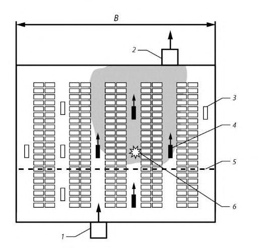
1 - система приточной противодымной вентиляции; 2 - система вытяжной противодымной вентиляции; 3 - выключенный струйный вентилятор; 4 - включенный струйный вентилятор; 5 -граница бездымной зоны; 6 - очаг пожара
Рисунок 5.1 Схема работы однонаправленной системы струйной вентиляции при продольной противодымной вентиляции
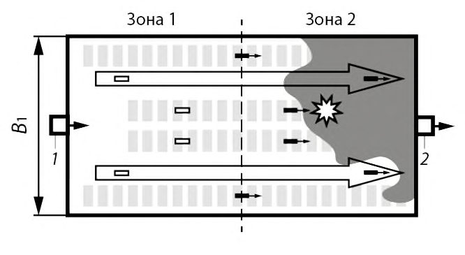
- а) Очаг пожара в зоне 2
- б) Очаг пожара в зоне 1
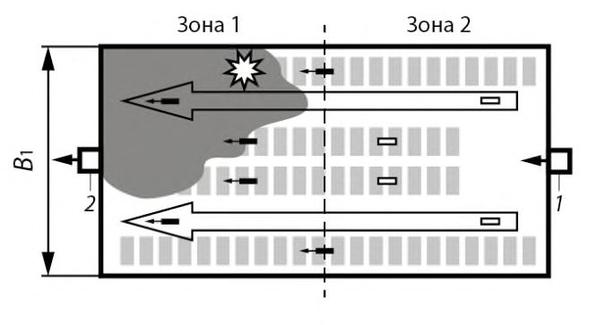
1 - система приточной противодымной вентиляции;
- 2 - система вытяжной противодымной вентиляции
Рисунок 5.2 - Схема работы реверсивной системы струйной вентиляции при продольной противодымной вентиляции
5.1.3.1 Однонаправленную схему системы струйной вентиляции, использующую нереверсивные струйные вентиляторы и нереверсивные вентиляторы дымоудаления (см. приложение А), следует применять для небольших автостоянок при условии
А
где А ст - вентилируемая площадь автостоянки, м² .
5.1.3.2 При выборе однонаправленной схемы системы струйной вентиляции площадь под пожарный отсек следует принимать в соответствии с СП 2.13130.2012 (пункты 6.3.1 и 6.3.2). При реверсивной схеме системы струйной вентиляции допускается увеличение площади под пожарный отсек до 10000 м² при наличии автоматической системы пожаротушения и до 5000 м² при ее отсутствии.
Примечание -Применяют реверсивные осевые и центробежные струйные вентиляторы - их производительность одинакова во всех направлениях.
5.1.3.3 Допускается применение струйных вентиляторов, обеспечивающих поворот вентиляционного потока на угол ≤ 360 о (см. приложение Б).
5.1.6.1 Допускается работа струйных вентиляторов на частичной
СП .1325800.2017 нагрузке не менее 25 % полной мощности (50 % полной производительности) при условии их одновременного включения.
- 5.1.6.2 Включение системы струйной вентиляции следует проводить автоматически, по сигналу приборов для измерения концентрации СО, установленных в помещении автостоянки в соответствии с СП 113.13330.2016 (пункт 6.3.6), или вручную.
Пример схемы работы системы струйной вентиляции в штатном режиме приведен на рисунке 5.3:
- включены все струйные вентиляторы в режиме по 5.1.6.1;
- включена приточно-вытяжная вентиляция.
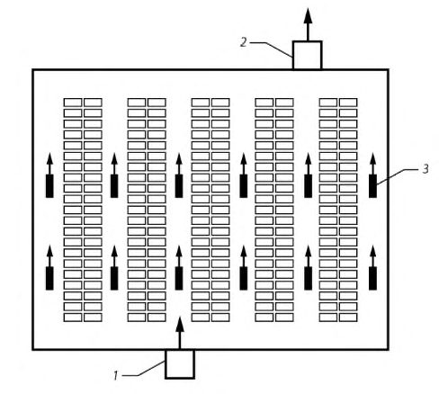
1 - система приточной вентиляции; 2 - система вытяжной вентиляции; 3 - струйный вентилятор
Рисунок 5.3 - Схема работы системы струйной вентиляции в штатном режиме
5.2Выбор основных технических решений
На рисунке 5.4 приведена схема установки струйного вентилятора на потолочном перекрытии, соответствующая 5.3.5.
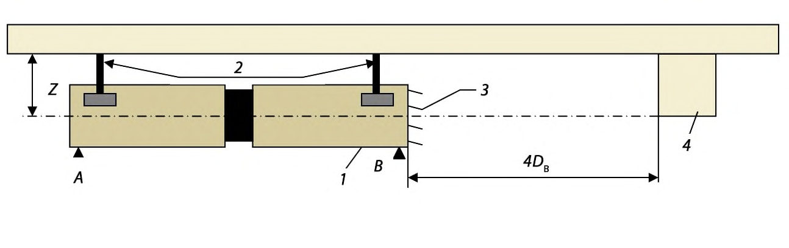
1 - струйный вентилятор; 2 - анкерные болты; 3 - направляющий аппарат; 4 - потолочная балка; D в - диаметр корпуса
Рисунок 5.4 - Схема установки струйного вентилятора
СП .1325800.2017
На выходном патрубке струйного вентилятора следует установить направляющий аппарат, отклоняющий воздушную струю от потолочного перекрытия на угол от 5 о до 10 о (см. приложение А).
Допускается применение воздуховодов системы приточно-вытяжной и противодымной вентиляции при сложных объемно-планировочных решениях, при неудачном расположении приточных и вытяжных клапанов (рисунок 5.5) и при использовании поперечной схемы противодымной вентиляции.
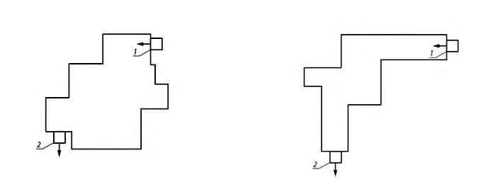
1- приточный клапан;
- 2 - вытяжной клапан.
Рисунок 5.5 - Схемы сложных объемно-планировочных решений автостоянки с различными вариантами расположения приточного и вытяжного клапанов
- а) удачное расположение;
- б) приемлемое расположение;
- в) неприемлемое расположение.
Примечание -При выборе конфигурации автостоянки необходимо учитывать следующее:
- наиболее целесообразной является прямоугольная конфигурация автостоянки;
- не рекомендуется ломаный профиль ограждающих конструкций;
- не рекомендуются перепады высоты потолочных перекрытий;
- выступы потолочных балок следует уменьшать, наилучшее решение - плоский потолок;
- не рекомендуется размещение припаркованных автомобилей в отдельных боксах.
При продольной схеме противодымной вентиляции необходимо предусматривать включение группы следующих струйных вентиляторов (см. рисунок 5.1):
СП .1325800.2017
- в зоне пожара (в зоне срабатывания датчика пожарной сигнализации);
- формирующих поток дыма между очагом пожара и клапанами системы противодымной вентиляции;
- защищающих эвакуационные выходы из автостоянки.
- при реверсивной схеме системы струйной вентиляции допускается подача наружного воздуха на уровне не более 2 м от пола с расходом, обеспечивающим дисбаланс не более 30 %, при средней скорости потока воздуха в нижней части помещения автостоянки, принятой в соответствии с 7.1 и 7.2, не более 1 м/с;
- при однонаправленной схеме системы струйной вентиляции допускается подача наружного воздуха при соблюдении требований СП 154.13130.2013 (пункт 6.3.2).
5.3Выбор типоразмера струйного вентилятора
Н - высота потолочного перекрытия, мм;
Н м - высота под оборудование и автомобили, мм; p - ширина балки, мм; m - высота балки, мм;
СП .1325800.2017
Z - расстояние между осью струйного вентилятора и потолочным перекрытием, мм;
D в - диаметр струйного вентилятора, мм;
L п.б - длина пролета между балками, мм;
L с - расстояние (в струе) от плоскости сопла струйного вентилятора до балки, мм.
Схема расположения струйного вентилятора на потолочном перекрытии приведена на рисунке 5.6.
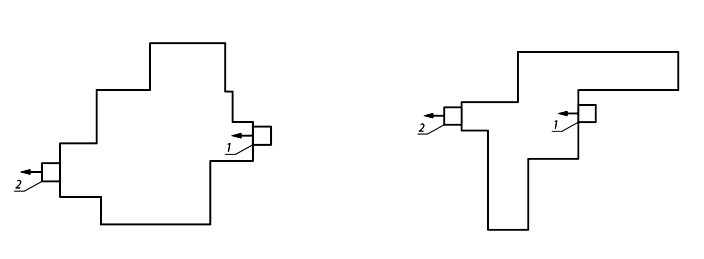
1 - струйный вентилятор; 2 - потолочное перекрытие с балками
Рисунок 5.6 - Схема расположения струйного вентилятора на потолочном перекрытии
5.4Исходные данные, выбираемые на основе объемнопланировочных решений автостоянки
- общий поэтажный план автостоянки;
- схему расположения парковочных мест и маршруты движения транспорта;
- расположение рампы, пандусов, оконных проемов, шахт лифтов, пилонов;
- местоположение аварийных выходов;
- проектное количество парковочных мест SP, шт.;
- максимальную частоту трафика f , 1/ч, вычисляемую по формуле
где N м - количество автомоблией, паркующихся в течении 1 ч;
- полную длину проезда в помещении автостоянки:
S по - полная длина проезда в автостоянке, м;
S рамп - длина проезда по закрытому участку рампы, м.
СП .1325800.2017 принимают f = 1,0 1/ч.
5.5Выбор исходных параметров для расчета воздухообмена при работе системы струйной вентиляции в штатном режиме
- 6 м³ /м² ч - для автостоянок с низкой посещаемостью при частоте транспортного трафика f ≤ 0,6 1/ч (подземные и крытые автостоянки жилых домов);
- 12 м³ /м² ч -для автостоянок с высокой посещаемостью при f = 1,0 1/ч (подземные и крытые автостоянки торговых и бизнес- центров);
- 16 м³ /м² ч - для автостоянок с очень высокой посещаемостью при 1,0 1/ч ≤ f ≤ 1,5 1/ч (подземные и крытые автостоянки больших торговых центров, аэропортов и вокзалов).
5.6Выбор исходных параметров для расчета воздухообмена системы струйной вентиляции в режиме дымоудаления
- проектная тепловая мощность очага горения Q п, МВт;
- температура приточного воздуха t 0 , о С;
- уровень нижней границы дымовых газов при затекании в сторону притока не менее Y = 2 м;
- периметр очага пожара Uf , м.
Таблица 5.1 Выбор проектных параметров пожара на автостоянке
| Параметры очага горения | Автоматическая система пожаротушения | Автоматическая система пожаротушения |
|---|---|---|
| есть | нет | |
| Габариты очага горения, м | 2 × 5 | 5 × 5 |
| U f , м | 14 | 20 |
| Q п , МВт | 4,5-5 (1 автомобиль) | 9-10 (2 автомобиля) |
6Правила проектирования приточно-вытяжной вентиляции автостоянок
СП .1325800.2017 вычисляют по формуле при S ср.по ≤ 50 м; при 50 м ≤ S ср.по ≤ 800 м.
Среднее значение эмиссии СО (г/ч) в помещении автостоянки G СО, г/ч, вычисляют по формуле
где E CO - в соответствии с формулами (6.2)-(6.4).
автостоянке Vа , м³ /ч, вычисляют по формуле
где COоб - максимально допустимая концентрация СО, равная 70 мг/м³ (по 5.5.1);
СОоб пр.возд - значение объемной концентрации СО в приточном воздухе за пределами автостоянки, мг/м³ .
Примечание - В жилых районах с малым движением транспорта это значение пренебрежимо мало и обычно принимается равным нулю; на сильно загруженных дорогах COоб пр.возд = 4 мг/м³ ; kG - коэффициент, учитывающий неравномерность вентиляции помещения автостоянки.
Примечание - Обычно находится в диапазоне от 1,25 до 1,50, если данные отсутствуют - принимается значение 1,25.
Пример расчета приточно-вытяжной вентиляции автостоянки представлен в приложении Д.
7Правила проектирования продольной противодымной вентиляции автостоянок
- подпотолочный поток горячих пожарных газов, обусловленный работой струйных вентиляторов;
- поток холодного воздуха от вентиляторов системы приточной противодымной вентиляции со средней скоростью v 1 , м/с, в нижней части автостоянки, ограниченный линией раздела потоков на высоте Y .
1 - вытяжка; 2 - условная граница раздела разноплотностных потоков воздуха; 3 - приток; 4 - расчетная граница дыма
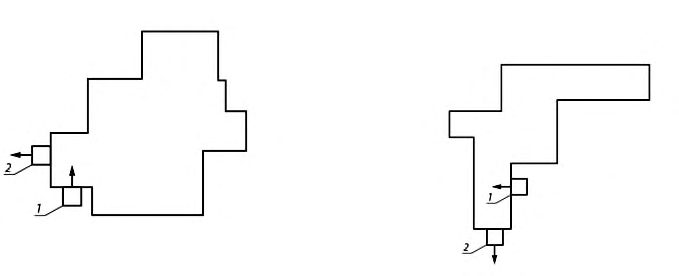
Рисунок 7.1 -Механизм развития разноплотностных потоков воздуха и дымовых газов, обеспечивающий защиту эвакуационных выходов от задымления
где V кр - минимальное допустимое значение скорости воздуха v 1 , м/с, вычисляемое по формуле
где
𝐿 = -
𝐴 = 9,8𝑌
𝑡 0 - температура приточного воздуха, °C; ρ в - плотность воздуха при температуре 𝑡 0 , кг/м³ ;
𝐶𝑝 -удельная теплоемкость воздуха, кДж/(кг·К); принимается равной 1,005 кДж/(кг·К);
𝐵 - ширина зоны локализации задымления автостоянки, м; может приниматься равной габаритному размеру автостоянки, перпендикулярному потоку дымовых газов (см. рисунок 5.1);
𝑌 - по 5.6.2 (см. рисунок 7.1);
Q к - конвективная мощность пожара, кВт, вычисляемая по формуле
𝑄
здесь φ - доля теплоты, отдаваемая очагом горения за счет излучения и теплопроводности; при отсутствии данных принимается равной 0,4;
Fr - число Фруда, равное:
- в остальных случаях и при отсутствии точных данных Fr = 4,5.
Зависимость значения критической скорости V кр от габаритных размеров автостоянки B , при различных конвективных мощностях пожара Q к, приведена на рисунках Е.1-Е.4 приложения Е при двух предельных значениях числа Fr.
СП .1325800.2017
8Правила проектирования систем струйной вентиляции автостоянок
8.1Правила расчета реактивной тяги струйного вентилятора с учетом влияния монтажных размеров, режима работы и особенностей конструкции струйного вентилятора
где F н -номинальная реактивная тяга вентилятора, полученная при заводских стендовых испытаниях, Н; k 1 - коэффициент, учитывающий снижение реактивной тяги вентилятора от номинального значения, возникающее при передаче импульса от струи вследствие отличия средней скорости воздуха в помещении от нулевого значения, имевшего место при заводских испытаниях; k 2 - коэффициент, учитывающий снижение реактивной тяги вентилятора от номинального значения вследствие эффекта трения от настилающейся на потолочное перекрытие вентиляционной струи; k 3 - коэффициент, учитывающий изменения реактивной тяги вентилятора от номинального значения вследствие снижения потерь на трение при отклонении вентиляционной струи от ограждающих конструкций.
8.1.2 Коэффициент k 1 вычисляют по формуле
где v 1 - в соответствии с 7.1; при отсутствии данных и при поперечной системе дымоудаления принимается равной 0,8 м/с; v 0 -средняя скорость воздуха в выходном сечении струйного вентилятора, определяемая по паспортным данным или протоколу результатов заводских испытаний, м/с.
Рисунок 8.1 График зависимости поправочного коэффициента k 2 от монтажного параметра 𝒌м
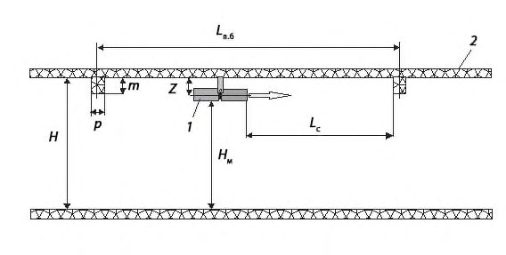
Рисунок 8.2 -График зависимости коэффициента k 3 от угла наклона струи относительно оси струйного вентилятора
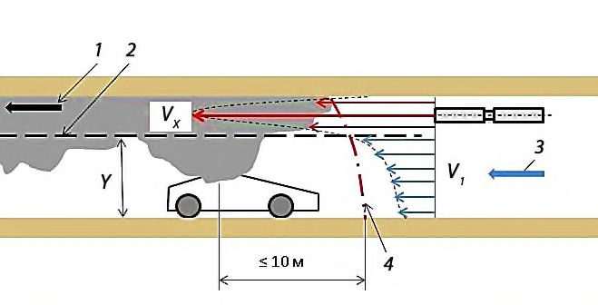
8.2Правила расположения струйных вентиляторов в помещении автостоянки
- минимальное значение осевой скорости воздушной струи vx min при помощи подбора продольного расстояния между вентиляторами L п , обеспечивающего выполнение условия: 𝑣𝑥min
- смыкание воздушных струй параллельных вентиляторов на расстоянии L п для создания равномерного (без разрывов) подпотолочного потока воздуха за счет подбора расстояния b между параллельно установленными вентиляторами.
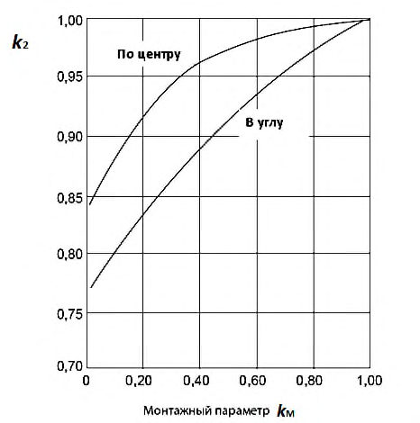
- а) Соосная установка струйных вентиляторов
- б) Параллельная установка струйных вентиляторов
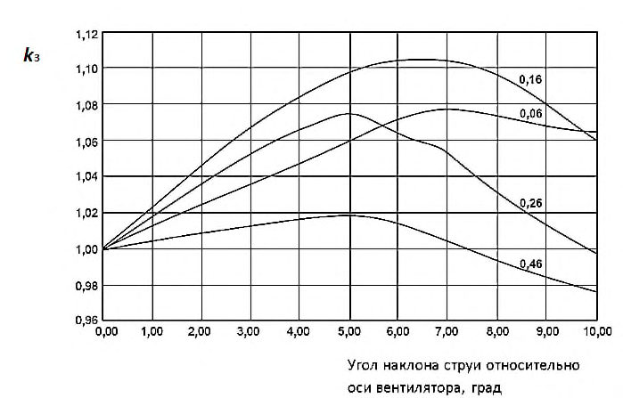
Рисунок 8.3 Схема взаимного расположения струйных вентиляторов в пожарном отсеке
𝑆
где 𝑘 рез = 1,1 - коэффициент резервирования.
СП .1325800.2017 использованием данных, полученных при численном моделировании и заводских испытаниях струйного вентилятора. Пример расчета системы струйной вентиляции подземной автостоянки представлен в приложении Ж.
АПриложение А. Примеры конструкций осевых однонаправленных и реверсивных осевых струйных вентиляторов
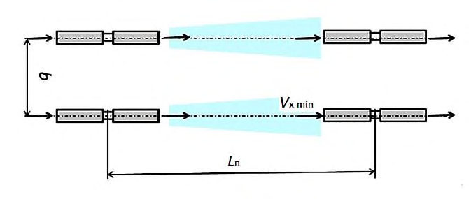
- 1 - корпус вентилятора; 2 - крыльчатка; 3 - лопасть крыльчатки;
- 4 - носовой обтекатель; 5 - хвостовой обтекатель; 6 - монтажная рама;
- 7 - электродвигатель; 8 - опора двигателя; 9 - наконечник; 10 - шумоглушитель
Рисунок А.1 Конструкция однонаправленного осевого струйного вентилятора
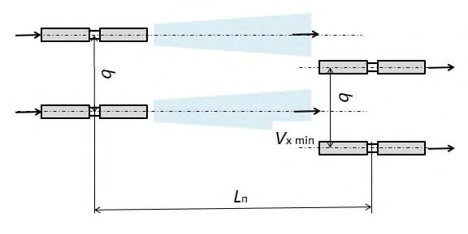
L - общая длина струйного вентилятора; L 1 - длина осевого реверсивного вентилятора с двигателем; L 2 - длина глушителя;
1 - шумоглушитель; 2 - лопатки; 3 - двигатель
Рисунок А.2 - Конструкция реверсивного осевого струйного вентилятора
БПриложение Б. Примеры применения реверсивных центробежных струйных вентиляторов
Б.1 Реверсивный центробежный струйный вентилятор обеспечивает две пожарные зоны в помещении автостоянки и поворот вентиляционного потока на 180° (см. рисунок Б.1).
Рисунок Б.1 Схема автостоянки, оснащенной системой струйной вентиляции на базе центробежных струйных вентиляторов
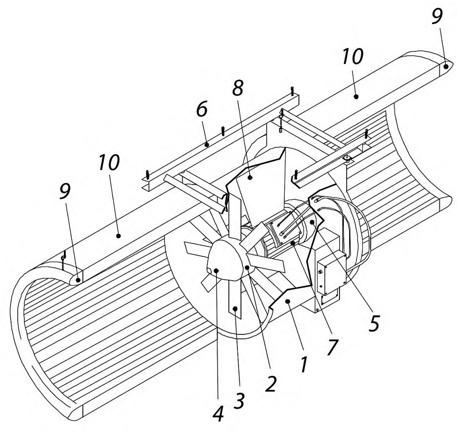
Б.2 Реверсивный центробежный вентилятор обеспечивает две пожарные зоны в помещении автостоянки и поворот вентиляционного потока на 90°.
Рисунок Б.2 Схема автостоянки оснащенной системой струйной вентиляции на базе центробежных струйных вентиляторов
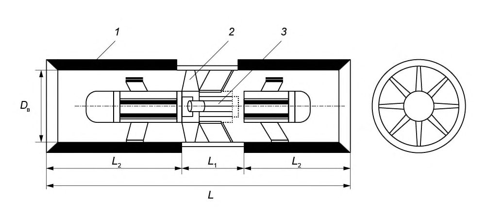
Б.3 Реверсивный центробежный вентилятор обеспечивает три пожарные зоны в помещении автостоянки и поворот вентиляционного потока на ± 90°.
Рисунок Б.3 Схема автостоянки, оснащенной системой струйной вентиляции на базе центробежных струйных вентиляторов
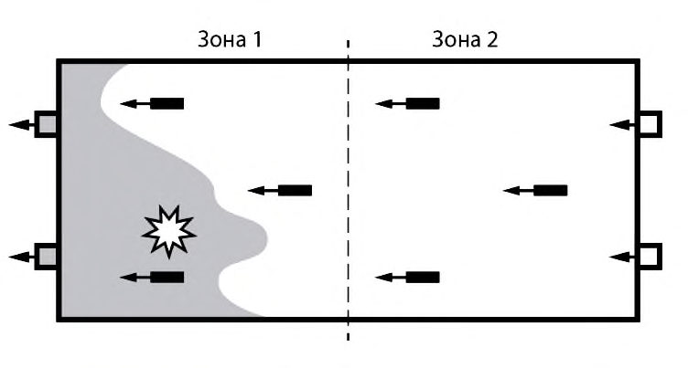
Б.4 Реверсивный центробежный вентилятор, обеспечивающий поворот вентиляционного воздушного потока на 360° может в сочетании с другими вентиляторами являться решением для автостоянок очень большой площади.
Рисунок Б.4 Схема автостоянки, оснащенной системой струйной вентиляции на базе центробежных струйных вентиляторов
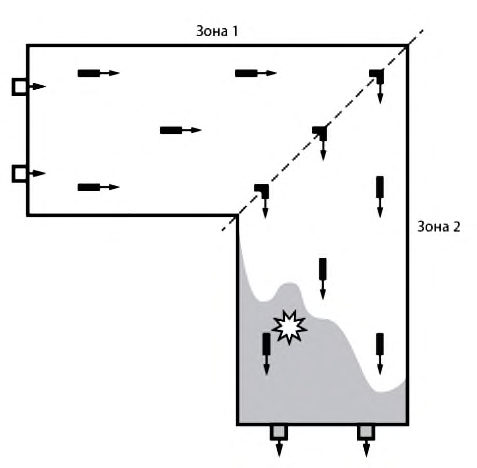
ВПриложение В. Примеры схем расположения струйных вентиляторов в помещении автостоянки
Струйные вентиляторы могут быть расположены:
- над дорожным полотном, рядом с колоннами;
- осевой линией дорожного полотна;
- парковочными и между парковочными местами.
В.1 Схема расположения струйных вентиляторов над дорожным полотном, рядом с колоннами, приведена на рисунке В.1.
Рисунок В.1 Расположение струйных вентиляторов над дорожным полотном, рядом с колоннами
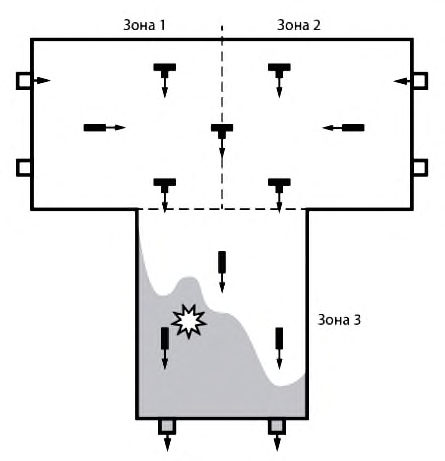
Данную схему применяют при высоте потолочных перекрытий от 2,5 до 3,0 м.
В.2 Схему расположения вентиляторов над осевой линией дорожного полотна, приведенную на рисунке В.2, целесообразно применять для вентиляторов с реактивной тягой от 40 до 100 Н.
Данная схема позволяет существенно снизить потери на трение воздушной струи об ограждающие конструкции. В этом случае высота потолочных перекрытий Н является ограничивающим фактором.
Рисунок В.2 Расположение струйных вентиляторов над осевой линией дорожного полотна
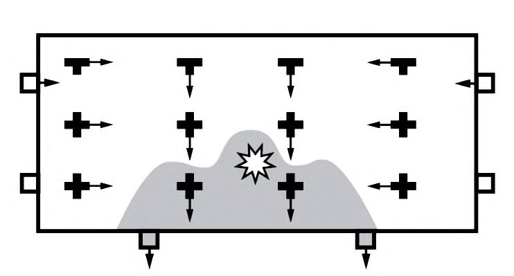
В.3 Схема расположения вентиляторов над парковочными местами, приведенная на рисунках В.3 и В.4, применяется, когда другие варианты невозможны.
Рисунок В.3 Расположение струйных вентиляторов над парковочными местами
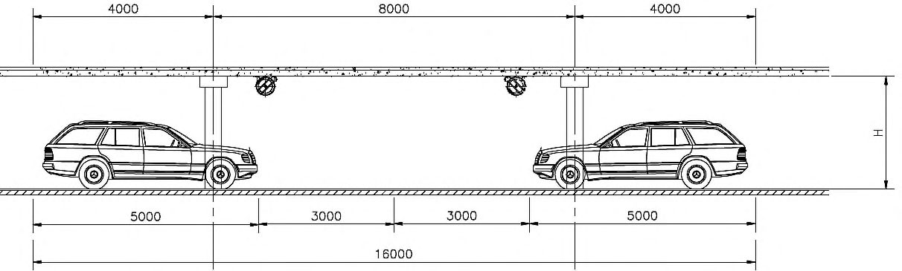
Рисунок В.4 Расположение струйных вентиляторов над парковочными местами
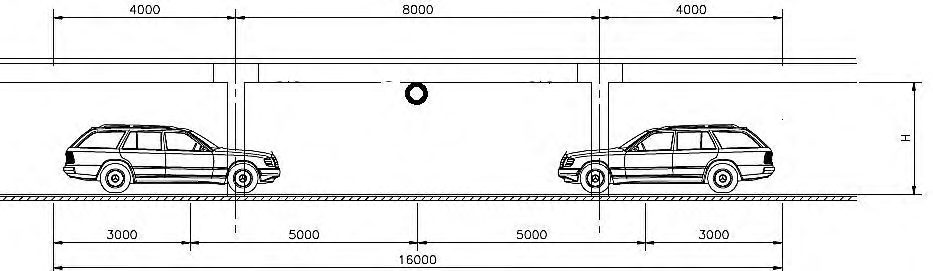
ГПриложение Г. Классификация автомобилей, применяемая для определения параметров машино-мест на автостоянках (на основе справочных
данных СП 113.13330)
Таблица Г.1 Классификация автомобилей, применяемая для определения параметров машино-мест на автостоянках
| Класс | Максимальные габариты, мм | Максимальные габариты, мм | Максимальные габариты, мм | Объем | Масса не- снаряжен- |
|---|---|---|---|---|---|
| автомобиля | Длина L | Ширина В | Высота Н | двигателя, л | ного автомобиля, |
| 1 Малый | 3700 | 1600 | 1600 | 0,85-1,80 | 0,65-1,15 |
| 2 Средний | 4300 | 1700 | 1700 | 1,8-3,5 | 1,15-1,5 |
| 3 Большой | 5000 | 1900 | 2100 | 3,5-5,0 | 1,5-1,9 |
| 4 Микро- автобусы | 5500 | 1970 | 2300 | 4,5-6,0 | 1,9-2,4 |
ДПриложение Д. Пример расчета приточно-вытяжной вентиляции подземной автостоянки
Необходимо осуществить расчет воздухообмена при работе приточновытяжной вентиляции подземной автостоянки, оснащенной системой реверсивной струйной вентиляцией, представленной на рисунке Д.1.
Расчет выполняют в двух вариантах:
- для автостоянки жилого дома;
- автостоянки торгового центра.
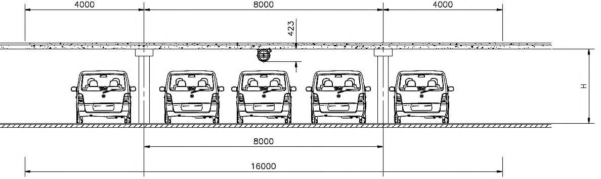
1 - реверсивный струйный вентилятор; 2 - вытяжка (система вытяжной вентиляции); 3 - приток (система приточной вентиляции); 4 - въезд; 5 - выезд
Рисунок Д.1 - Схема подземной автостоянки
Пример Д.1 - автостоянка жилого дома
Исходные данные для расчета автостоянки в соответствии с 5.4.1, 5.4.2:
- SP= 232 шт.;
- S по = 162 м;
- S рамп= 42 м;
- f = 0,6 1/ч.
В соответствии с 5.4.4 А ст = 4870 м² .
Транспорт выезжает утром, ни один автомобиль в это время в парк не въезжает.
В соответствии с формулой (6.1):
В соответствии с формулой (6.4):
В соответствии с формулой (6.5):
В соответствии с формулой (6.8):
/ч.
Пример Д.2 Автостоянка торгового центра
Исходные данные для расчета автостоянки в соответствии с 5.5:
COоб пр.возд = 4 мг/м³ в соответствии с 6.7.
Как только освобождается парковочное место, оно занимается, поэтому эмиссия СО обусловлена работой горячих и холодных двигателей.
В соответствии с формулой (6.2):
В соответствии с формулой (6.5):
В соответствии с формулой (6.8):
/ч.
В таблице Д.1 представлены результаты расчета воздухообмена, выполненные выше, с использованием усредненных удельных расходов воздуха по 5.5.2.
СП .1325800.2017
Таблица Д.1
| Расчет воздухообмена автостоянки, м³ /ч | Расчет воздухообмена автостоянки, м³ /ч | |
|---|---|---|
| Тип автостоянки | по удельным усредненным расходам воздуха по 5.5.2 | по данным примеров, приведенных в Д.1, Д.2 |
| Автостоянка жилого дома | 29220 | 24295 |
| Автостоянка торгового центра | 58440 | 47816 |
ЕПриложение Е. Расчет критической скорости воздуха V кр в помещении автостоянки и производительности вентиляторов дымоудаления 𝑽𝒆𝒙
Е.1Расчет критической скорости V кр в соответствии с формулой (7.2)
Рисунок Е.1 График зависимости V кр от ширины автостоянки В при различных значениях конвективной мощности пожара Q к, при числе Фруда Fr = 6,0
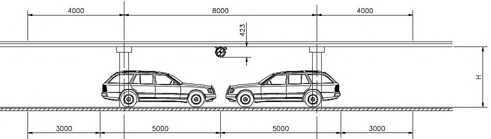
СП .1325800.2017
Рисунок Е.2 График зависимости V кр от ширины автостоянки В при различных значениях конвективной мощности пожара Q к, при числе Фруда Fr = 4,5
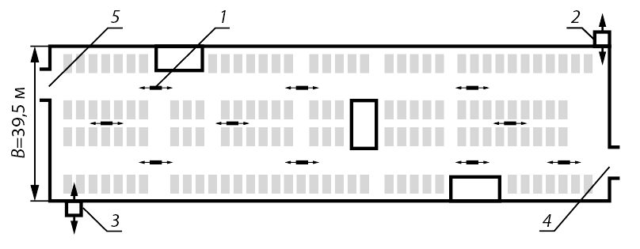
Е.2 Расчет производительности вентиляторов дымоудаления в соответствии с формулой (7.9).
Рисунок Е.3 График зависимости производительности вентиляторов дымоудаления 𝑽𝒆𝒙 от ширины автостоянки В при различных значениях конвективной мощности пожара Q к, при числе Фруда Fr = 6,0
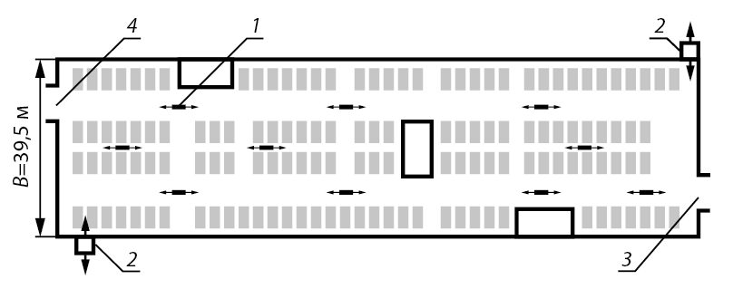
СП .1325800.2017
Рисунок Е.4 График зависимости производительности вентиляторов дымоудаления 𝑽𝒆𝒙 от ширины автостоянки В при различных значениях конвективной мощности пожара Q к, при числе Фруда Fr = 4,5
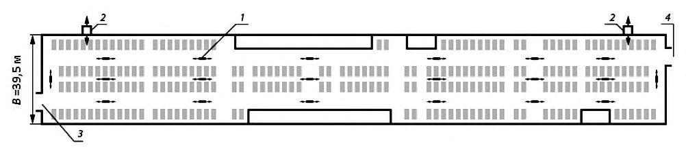
ЖПриложение Ж. Пример расчета реверсивной системы струйной вентиляции подземной автостоянки в режиме дымоудаления
Необходимо осуществить расчет системы реверсивной струйной вентиляции подземной автостоянки в режиме дымоудаления.
Расчет выполняют в двух вариантах:
- для автостоянки площадью А ст = 4870 м² ;
- для автостоянки площадью А ст = 9970 м² .
Ж.1Расчет системы струйной вентиляции для автостоянки площадью А ст = 4870 м² , представленной на рисунке Ж.1
1 - реверсивный струйный вентилятор; 2 - приток-вытяжка (системы приточной и вытяжной протидымных вентиляций соответственно); 3 - въезд; 4 - выезд
Рисунок Ж.1 Реверсивная схема струйной вентиляции подземной автостоянки площадью А ст = 4870 м²
В соответствии с разделом 7 выполняют расчет воздухообмена в режиме дымоудаления, приняв проектную тепловую мощность очага горения Q п в соответствии с таблицей 5.1 равной 5 МВт (пожар одного автомобиля).
СП .1325800.2017 а) В соответствии с формулой (7.2):
По формуле (7.8) вычисляют температуру газовоздушной смеси:
В соответствии с формулой (7.1) допускают v 1 = V кр .
По формуле (7.9) вычисляют производительность вентиляторов дымоудаления:
Выбирают четыре реверсивных вентилятора дымоудаления по 117000 м³ /ч (два вентилятора на притоке и два на вытяжке).
- б) Выбирают типоразмер реверсивного струйного вентилятора в соответствии с 5.3.
Основные размеры помещения автостоянки, влияющие на выбор типоразмера струйного вентилятора (см. рисунок 5.6):
Н = 3500 мм; р = 500 мм; m = 900 мм;
Н м = 2100 мм для автомобилей большого класса в соответствии с приложением И.
Применяют реверсивный струйный вентилятор D в = 400 мм с номинальной реактивной тягой F н = 57 H.
В соответствии с формулой (5.2):
900 ≤ Z ≤ 1000.
Выбирают значение Z = 1000 мм.
- в) Расположение струйных вентиляторов в помещении автостоянки.
В соответствии 8.1.1 определяют расчетное значение реактивной тяги струйных вентиляторов с учетом монтажных размеров.
В соответствии с формулой (8.2):
В соответствии с формулой (8.3) определяют монтажный параметр вентилятора:
При помощи графика (рисунок 8.1) определяют, что k 2 = 0,98.
При помощи графика (рисунок 8.2) определяют, что
СП .1325800.2017 k 3 = 1, при угле наклона лопаток направляющего аппарата 4°.
В соответствии с формулой (8.1):
В соответствии с формулой (8.4) принимают минимальное значение осевой скорости воздушной струи vx min = 0,9 м/с.
Максимально допустимое расстояние между струйными вентиляторами и максимально допустимую площадь, вентилируемую одним струйным вентилятором, определяют при помощи графиков на рисунках И.1-И.3: L п = 40 м; b = 14 м; 𝑆в1 = 560 м² .
Таким образом, расчетное количество струйных вентиляторов определяют в соответствии с формулой (8.6):
С учетом резервирования в соответствии с 5.2.15 количество струйных вентиляторов принимают n в = 10 шт.
Ж.2Расчет системы струйной вентиляции для автостоянки площадью А ст = 9970 м²
На рисунке Ж.2 представлена схема подземной автостоянки, оснащенная в соответствии с 5.1.3.2 реверсивной системой струйной вентиляции.
1 - реверсивный струйный вентилятор; 2 - приток-вытяжка; 3 - въезд; 4 - выезд
Рисунок Ж.2 Реверсивная схема струйной вентиляции подземной автостоянки площадью А ст = 9970 м²
Основные расчетные параметры системы струйной вентиляции аналогичны Ж.1 и отличие состоит только в большей площади подземной автостоянки.
Таким образом, расчетное количество струйных вентиляторов определяют в соответствии с формулой (8.6):
С учетом резервирования в соответствии с 5.2.15 количество струйных вентиляторов принимают n в = 20 шт.
ИПриложение И. Выбор расстояний между струйными вентиляторами (в соответствии с 8.2.1)
Рисунок И.1 График зависимости расстояния L п (в струе) от расчетной реактивной тяги F
р вентилятора при различных значениях vx min
Рисунок И.2 График зависимости межосевого расстояния b от расчетной реактивной тяги вентилятора F р при различных значениях vx min
СП .1325800.2017
Рисунок И.3 График зависимости площади S в1, проветриваемой одним вентилятором, от расчетной реактивной тяги вентилятора F р при различных значениях vx min [в соответствии с формулой (8.5)]
Библиография
- [1] Федеральный закон от 29 декабря 2004 г. № 190-ФЗ «Градостроительный кодекс Российской Федерации» \_\_\_\_\_\_\_\_\_\_\_\_\_\_\_\_\_\_\_\_\_\_\_\_\_\_\_\_\_\_\_\_\_\_\_\_\_\_\_\_\_\_\_\_\_\_\_\_\_\_\_\_\_\_\_\_\_\_\_\_